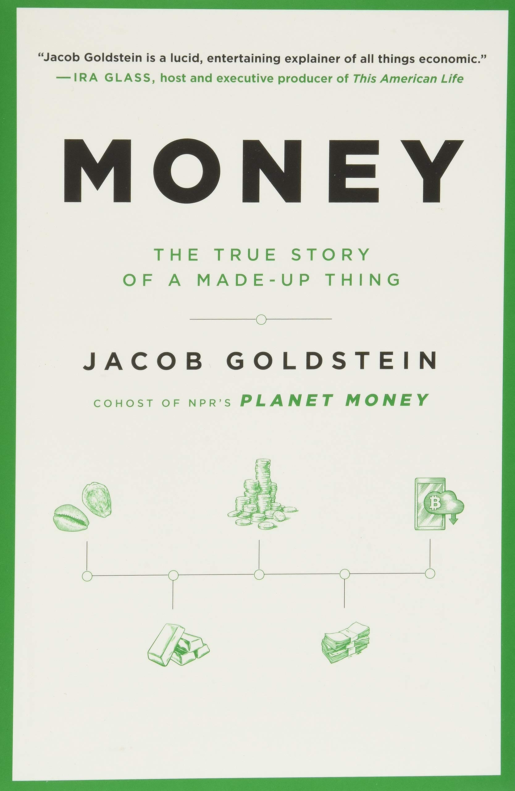
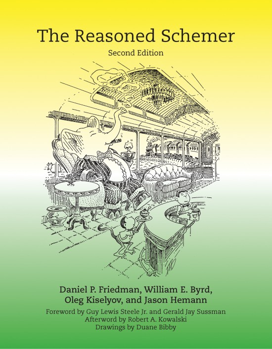
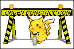

The typical set
You've just set foot on the typical set, a subset of my personal notes, my blog, some longform write ups. Feel free to explore. You can start with what I am doing now.
I write software…
I am a glorified statistician (some say data scientists) and software developer. I am currently a very busy freelance. I am particularly interested in bayesian statistics & generative modeling, mcmc sampling and symbolic computing, which translate into my professional life and the open source projects I contribute to:
- Blackjax is a sampling (mostly MCMC) library that is built with JAX for ease of use, speed and modularity.
- Aemcmc is a sampling library built with Aesara which builds samplers from model graphs. Aehmc implements symbolic HMC and NUTS samplers, but will likely merge into Aemcmc.
- MCX is an experimental PPL, deprecated in favor of Blackjax and Aesara/Aeppl. Read the blog post.
…dig rabbit holes…
Unlike a traditional blog, most of the notes you will find here are constant work in progress. They are mostly written for myself. Many of them are stubs, ideas waiting to be explored. They coalesce in blog posts (which are time-stamped) or longer projects (which aim at being evergreen bur are written for others).
With this experiment I am also trying to figure out how to write useful notes, and how to efficiently navigate between them.
and sometimes blog:
Notes that are found in the rabbit hole sometimes coalesce into blog posts. Unlike evergreen notes, blog posts are time-stamped and are thus allowed (sometimes expected) to become stale.
This is what I'm currently reading
(For what I have recently read -> HERE)


About this website

These notes are generated with Org-roam, are automatically published with Org Mode. They're infused with a healthy dose of nostalgia for the old web; the design is essentially the same as this motherfucking website, with 4 lines of CSS to improve readability. I was heavily inspired by Andy Matuschak's notes and Neil Mather's digital garden.
This website is forever under construction.